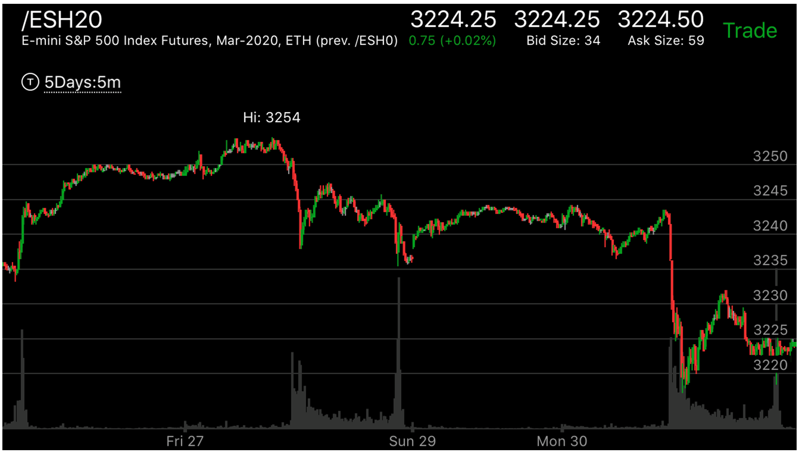

开盘后，立刻快速运动走势
- 在前一个收盘前，它出现了相对弱势，然后一晚上震荡了很久，在为一个走势做准备，
一开盘就迅速运动。可以一开盘就买相应的期权来扩大利润
- 它在刚刚开盘后，一定是处于大盘一夜的震荡的弱势的地方，比如要涨，那么处于震荡的下沿，而要跌，则处于震荡的上沿。

图示：
而SUN29的时候，它在前一天收盘前，创新低后，立刻拉回，形成了下跌相对弱势，它在经历了一夜的震荡后，一开盘就从震荡高点快速下跌。
这两个走势，都可以一开盘就买入put来扩大利润。

图示：Wed盘中出现了上涨的相对幅度弱势，收盘前上涨，收盘后，经过一夜的运行，它并没有大涨。
开盘前从震荡高点拉回，为大涨做好准备。一开盘，刚刚1，2分钟，它就暴涨了。